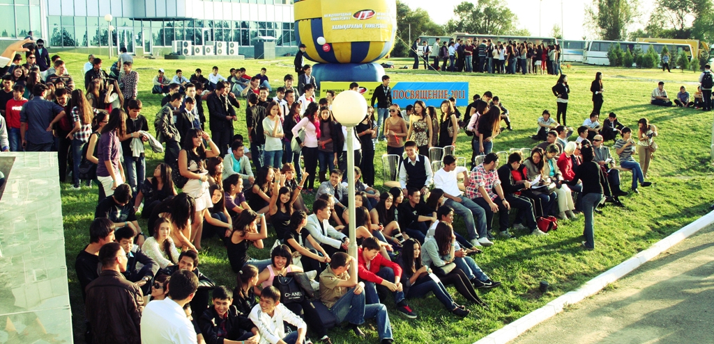

Международный IT Университет предлагает:
- Качественный отбор абитуриентов при поступлении;
- Материально-техническое оснащение на высоком уровне;
- Американские программы Университета Carnegie Mellon- 10 модулей;
- Диплом казахстанский – государственного образца;
- Сертификат Университета Carnegie Mellon – международно-признанный документ;
- Американская кредитная система обучения с лучшими элементами отечественного стандарта;
- Интересная студенческая жизнь!
- Обменные программы с зарубежными ВУЗами;
- Стажировки за рубежом;
- участие в международных IT соревнованиях и интеллектуальных олимпиадах;
- Трудоустройство выпускников IT Университета на выгодные позиции, с перспективой карьерного роста и материального благополучия.
- Возможность продолжения обучения в магистратуре, PhD и др.;
Специальности бакалавриата:
• информационные системы (предмет по выбору ЕНТ– физика);
• вычислительная техника и программное обеспечение (предмет по выбору ЕНТ– физика);
• информатика (предмет по выбору ЕНТ– физика);
• менеджмент в IT (предмет по выбору ЕНТ - география);
• финансы в IT (предмет по выбору ЕНТ - география);
• электронная журналистика (предмет по выбору ЕНТ - любой предмет);
• радиотехника, электроника и телекоммуникации (предмет по выбору ЕНТ– физика);
• математическое компьютерное моделирование (предмет по выбору ЕНТ– физика);
ЯЗЫКИ ОБУЧЕНИЯ:
Казахский/английский
Русский/английский
ВНЕ КОНКУРСА ПРИНИМАЮТСЯ:
• Обладатели «Алтын белгi»
• Призеры (1-2-3 места) республиканских олимпиад по физике, математике, информатике
НА КОНКУРСНОЙ ОСНОВЕ
• Собеседование
• Экзамены:
– Компьютерное тестирование по информатике
– Английский
УНИВЕРСИТЕТ ПРЕДОСТАВЛЯЕТ 3 ВИДА ГРАНТОВ:
• гранты от Министерства образования и науки Республики Казахстан
• Гранты Национальных компаний Республики Казахстан
• Гранты Международного IT-Университета
А также, гранты на Военную кафедру.
ПРАВИЛА ПРИЕМА В МЕЖДУНАРОДНЫЙ УНИВЕРСИТЕТ ИНФОРМАЦИОННЫХ ТЕХНОЛОГИЙ (НА БАКАЛАВРИАТ) В 2014 ГОДУ
Перечень необходимых документов для поступления
1.Аттестат с приложением (оригинал)
2.Сертификат ЕНТ (оригинал)
3.2 копии удостоверения личности
4.8 фото 3х4
5.Мед. справка 086У (со снимком флюорографии)
6.Прививочная карта
7.Копия приписного свидетельства (для юношей)
8.Копия грамот и дипломов на основании Типовых правил приема в высшие учебные заведения Республики Казахстан
Образовательный Лингвистический Центр «Lingva» характеризуется:
- профессиональным преподавательским составом;
- удобным для школьников временем проведения курсов;
- курсы проводятся 3 раза в неделю по 2 академических часа;
- по окончанию выдается сертификат, подтверждающий уровень знания английского языка;
- сертификат уровня Intermediate и выше, освобождает от вступительного экзамена по английскому языку в Международный IT Университет.
Lingva центр предлагает курс грамматики английского языка для абитуриентов с базовым уровнем знания английского языка. Главная цель Lingva центра - подготовить абитуриентов к успешному обучению в Международном IT Университете, где учебные программы преподаются на английском языке.
Набор на курсы производится по результатам компьютерного тестирования. Тест состоит из 40 вопросов, на ответы предоставляется 50 минут. Сразу по окончанию теста будущие учащиеся получают результаты. В соответствии с набранными баллами определяется уровень владения английским языком.